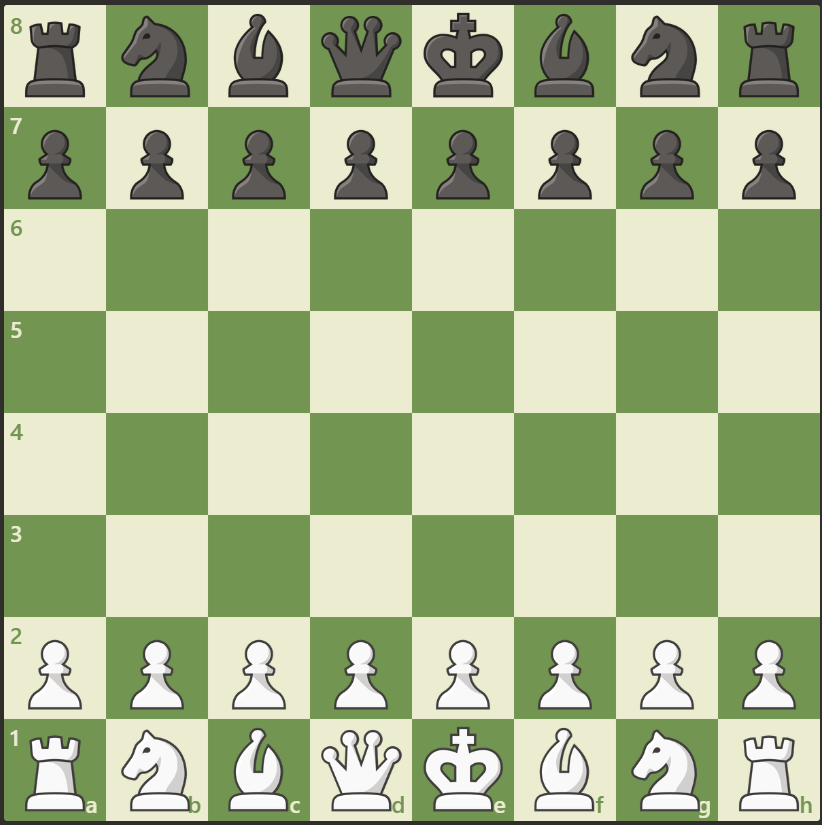

Home
hi, I am sadiq
I’m endlessly curious about how things work — from engines and drones to AI and the mysteries of space.
For me, engineering isn’t just about solving problems, it’s about asking better questions and exploring ideas that push me to learn more every day.
This space is where I share my experiments, thoughts, and the journey of figuring things out — one challenge at a time.
you can find about me from the above grids
About me
I’m an aspiring engineer with a strong curiosity for how complex systems work — from machines and aircraft to code and the universe itself. My interests span across mechanical engineering, AI, aviation, and even astrophysics, and I enjoy exploring how these fields connect.
I am a student of engineering with a deep interest in understanding how systems function and how they can be improved. My academic and personal explorations span across several domains — from mechanical design, automobiles, and drones to avionics, artificial intelligence, and astrophysics. What drives me is not only the ability to solve problems, but the curiosity to ask why systems work the way they do, and how they might be reimagined for the future.
At the same time, I believe that technical knowledge must be balanced with perspective and reflection. My passion for philosophy allows me to think critically and approach challenges from multiple viewpoints, while photography and my connection with nature cultivate patience, observation, and creativity. These interests shape the way I learn and work, reminding me that progress is not only about precision and efficiency but also about understanding context and meaning
What drives me is the urge to learn, question, and experiment. I believe that growth doesn’t come from following a single path, but from combining knowledge across disciplines and applying it creatively.
For me, every project — whether it’s coding, building, or problem-solving — is an opportunity to understand a little more, and to push myself closer to turning ideas into reality.
My goal is to grow both as an engineer and as an individual — to combine technical expertise with human values, and to contribute in ways that are purposeful, thoughtful, and innovative.
Hobbies
Beyond engineering, I find joy in the little things that fuel my creativity and curiosity. Photography helps me capture moments from unique perspectives, while cooking allows me to experiment and create with my hands. Music is my constant companion, chess sharpens my strategic thinking, and reading books gives me both escape and inspiration. Together, these hobbies keep me grounded, imaginative, and always eager to learn
Photography

this photo was taken in the beautiful himalayas where zanskar and indus river meet as you can see the colour contrast of the river,a true marvel of nature

this photo was taken in the majestic western ghats where the flora and fauna make a beautiful blend nature at its peak and truely gods own country

this photo was taken in the open skies where the brilliant open skies meet the fulfilling clouds giving the the sky a rainbow conrtast at the wing

this chamaeleon enjoying the view of passer's by in vit chennai enjoying his moment with satisfaction
Cooking
Cooking is my creative outlet where I experiment with flavors and techniques to craft delicious meals. I enjoy trying out new recipes, blending spices, and presenting food in an appealing way. For me, cooking is not just about nourishment but also about the joy of creating something from scratch and sharing it with others.

this is korean prawns made with the combinatination of american cunchness with some southasian spice a true feast to the mouth
Music
Music is not only some background sound ,it's the key to one's soul opening the subconcious mind to peace and solace ,its deep yet rhythmic ,has bangers but still poetic,its not only a way to express emotion but the whole soul of the person
It is my constant companion, providing both inspiration and relaxation. I enjoy a wide range of genres, from classical to contemporary, and find that music enhances my creativity and focus. Whether I'm listening to my favorite tracks or exploring new artists, music is an essential part of my daily life.
Chess
For me, chess is more than just a game—it is a discipline that sharpens my mind and teaches patience, foresight, and strategy. I enjoy the balance between creativity and logic it demands, and I often find that the lessons I learn on the board—planning ahead, adapting to change, and thinking from different perspectives—translate into my approach to both engineering and life.
Reading
Reading is my gateway to new ideas, perspectives, and worlds. I enjoy a diverse range of genres, from science fiction and philosophy to biographies and technical literature. Books not only provide me with knowledge but also inspire creativity and critical thinking. They allow me to explore complex concepts and challenge my understanding, fueling both my personal growth and my passion for learning.

this book help me understand the importance of habits and how the affect a persons well being and how to optimise them to achieve maximum productivity

this book is a an start for any child who stars reading giving a combination of fun attractive colors and diffrent words a perfect start for kids

this book help me understand not money but also about the psychology of want and greed this book is a must read for every person out there

if Ia m talking about books how can I not talk about harry potter the boy who live the awesome series by Jk rowling which takes you world of wizarding exciting you with potions,curses and mythical creatures
qualifications
I am currently pursuing a degree in Mechatronics Engineering, with a strong interest in aviation and avionics systems. My academic journey has given me a solid foundation in engineering principles, automation, and embedded systems, while I actively explore applications in AI and defense technology.
Beyond academics, I’ve demonstrated leadership and initiative, such as leading a student protest for better facilities that resulted in long-term reforms. I enjoy tackling complex problem-solving in mathematics and engineering, and I balance my technical interests with curiosity in research and hands-on innovation. Looking ahead, I aim to specialize in defense aircraft design and advanced stealth systems, combining my passion for aviation with my engineering background.
contacts

gmail: sadiqpasha.s2025@vitstudent.ac.in